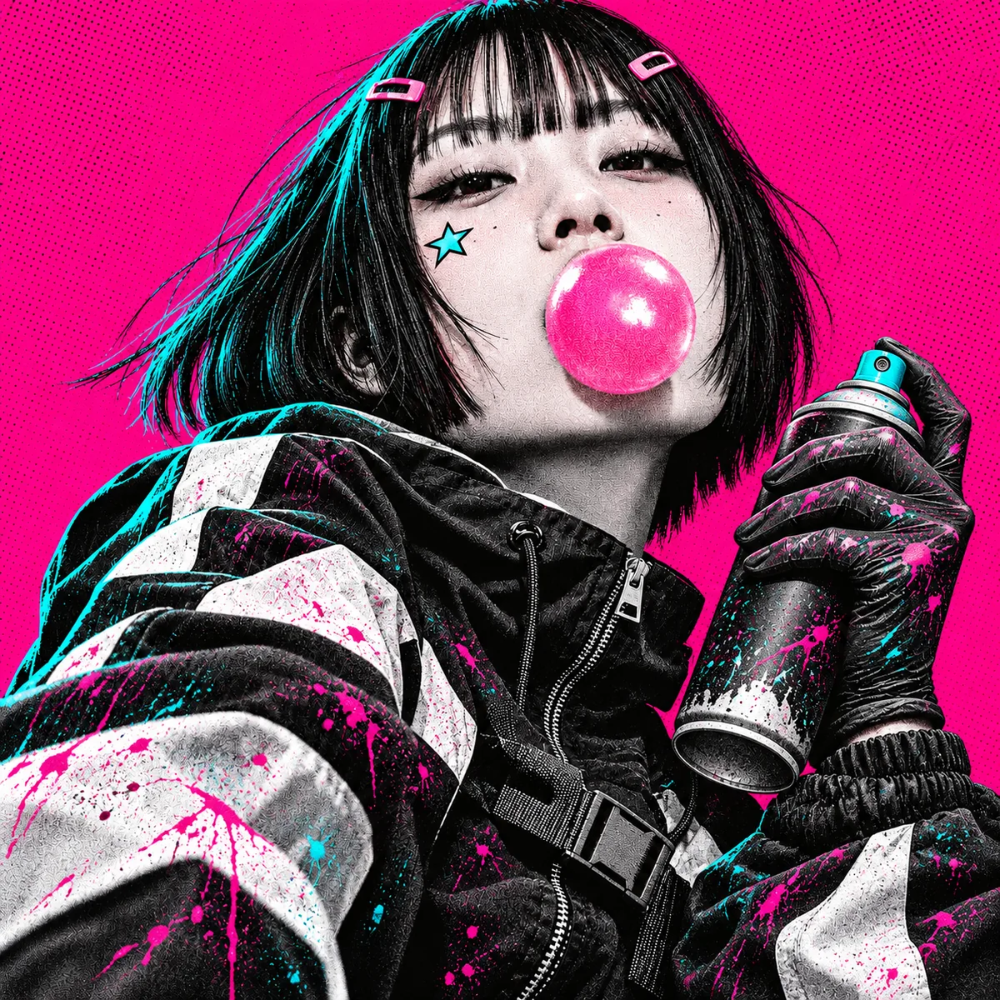
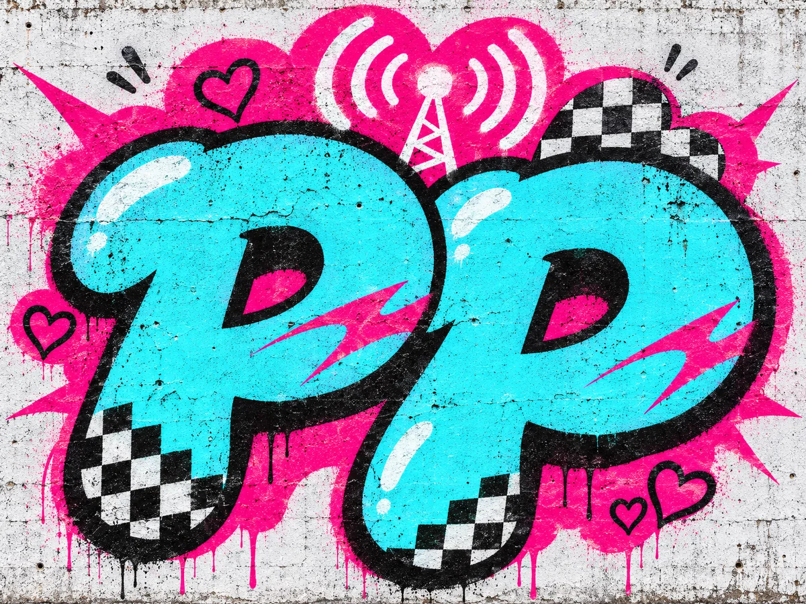
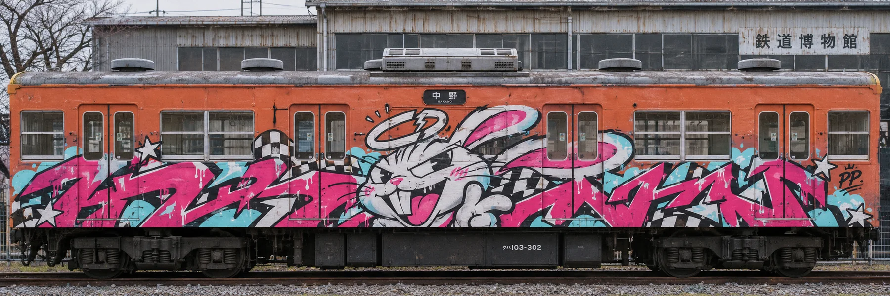
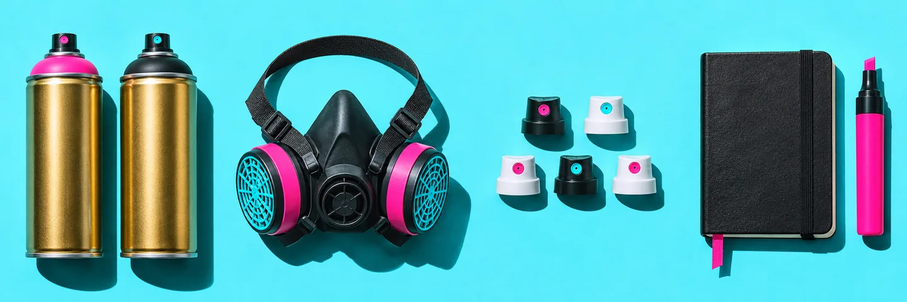

落書き GRAFFITI / ARTIST PORTRAIT


プロフィール
PP Vita
„Ich bin unsterblich. Montag kann mich mal.“
PP kommt aus Yokohama. Erst hat sie ihre Buchstaben in selbstgedruckte Zines gekritzelt, dann wurden daraus Arbeiten auf Beton und Stahl. Ihre Frage ist immer dieselbe: Wem gehört die Stadt? Ihre Antwort: denen, die hier leben. Auch denen, die zu jung aussehen, zu laut sind und nie gefragt wurden.
注目作品
WORK IN FOCUS


シュガー・スタティック
SUGAR
STATIC
Auf weißem Beton verkeilen sich zwei cyanfarbene P. Eine schwarze Kontur fasst beide zusammen. Pinke Herzen und ein Stück Schachbrett brechen die symmetrische Form auf.
Sprühfarbe auf Beton

愛用の道具
PP’S GO-TO KIT

-
Montana GOLD
PPs Dosen für Flächen, Outlines und pinke Akzente.
-
Atemschutzmaske
Die Halbmaske gehört für PP fest zur Ausstattung.
-
Fat & Skinny Caps
Breite Füllung, schmale Linien und kleine Details.
-
Blackbook
Hier zieht PP den PポP-Tag durch, bis jede Linie sitzt.